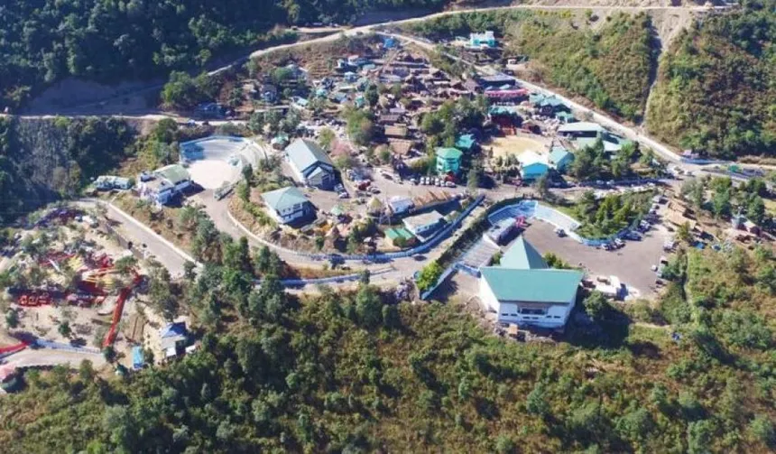
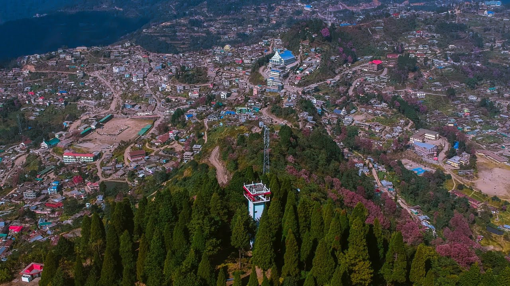
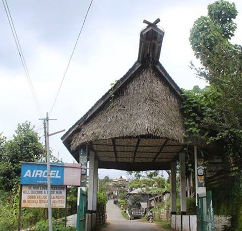
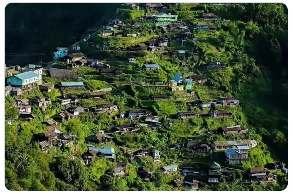
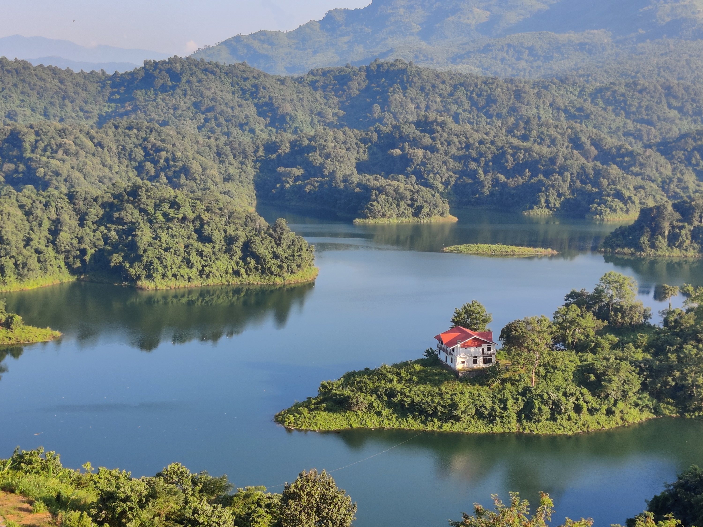
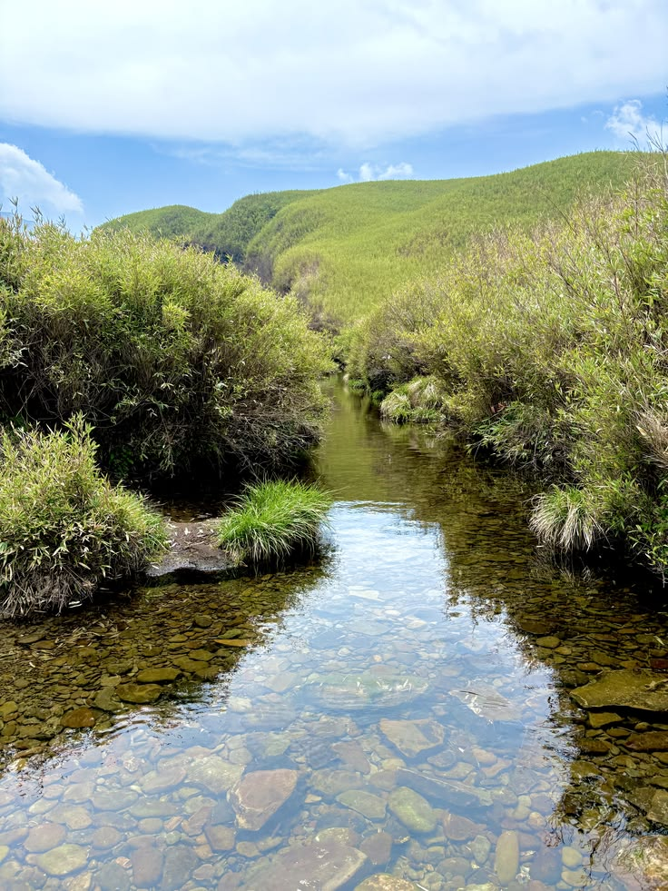

Valley / Trek
Dzükou Valley
Kohima District

Culture
Kisama Village
Kohima District

Eco Village
Khonoma Village
Angami Heritage

3,048 m Summit
Japfü Peak
Kigwema

Border Heritage
Longwa Village
Mon (Indo-Myanmar)

Coldest Town
Pfütsero
Phek District

Ao Heritage
Mokokchung
Ungma Village

Eco Trek
Benreu
Peren District

Ancient Monoliths
Kachari Ruins
Dimapur District

River Sanctuary
Dzuleke
Kohima District

Highland Pastures
Sheep Farm
Peren (Poilwa)

Falcon Haven
Doyang Lake
Wokha District

Sacred Lake
Shilloi Lake
Phek District

3,841 m Summit
Mt. Saramati
Kiphire (Thanamir)